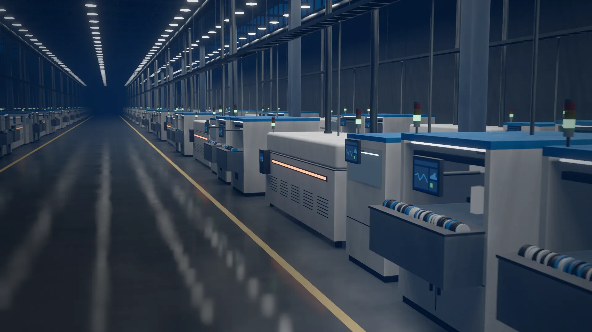

Video: una línea de montaje de electrónica en una maquiladora de Tijuana, de noche. Dentro de la lente se ve la misma línea como la ve SIP: cada máquina con su estado, las tarjetas avanzando por la banda y una alerta en un pick-and-place que aparece y se resuelve.
Mazatlán
Tu planta, en tiempo real
Conectamos máquinas, sensores y sistemas para que cada paro se vea en el momento y cada turno decida con datos.
Agenda un diagnóstico de tu líneaMueve el cursor sobre la línea: dentro de la lente ves cada máquina como la ve SIP.